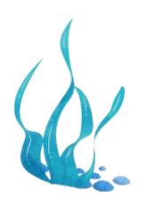
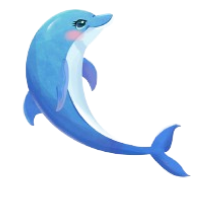
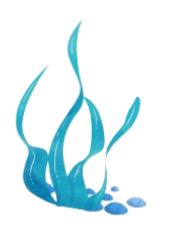
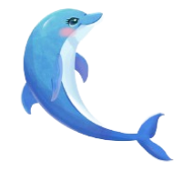
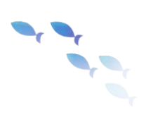
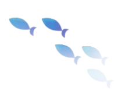

Solução acessível e eficaz para monitoramento de poluição por petróleo na água em tempo real.
Petróleo nos oceanos

O derramamento de petróleo nos oceanos causa graves danos ambientais.
Ele contamina a água, prejudicando a fauna e a flora marinhas. Os peixes, aves e mamíferos marinhos sofrem envenenamento e podem morrer. A poluição afeta a cadeia alimentar, resultando em impactos duradouros nos ecossistemas.

Além disso, o petróleo compromete a qualidade da água e pode atingir áreas costeiras, prejudicando a pesca e o turismo. A recuperação ambiental é lenta e os efeitos podem durar décadas, exigindo esforços significativos de limpeza e restauração.
 




 
